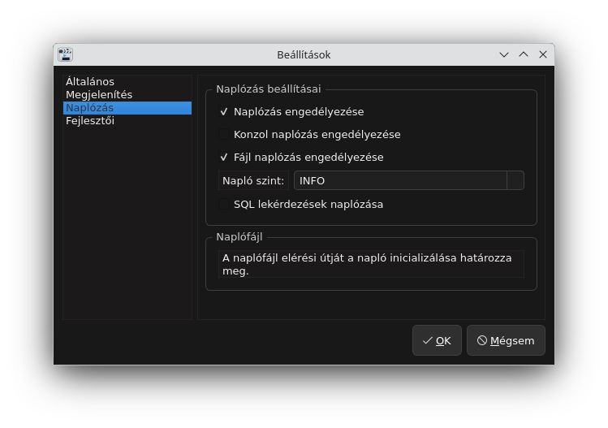
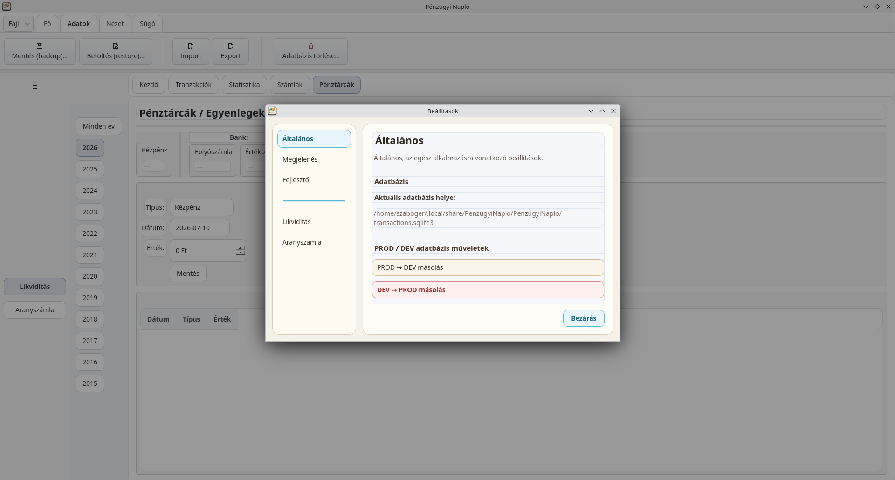
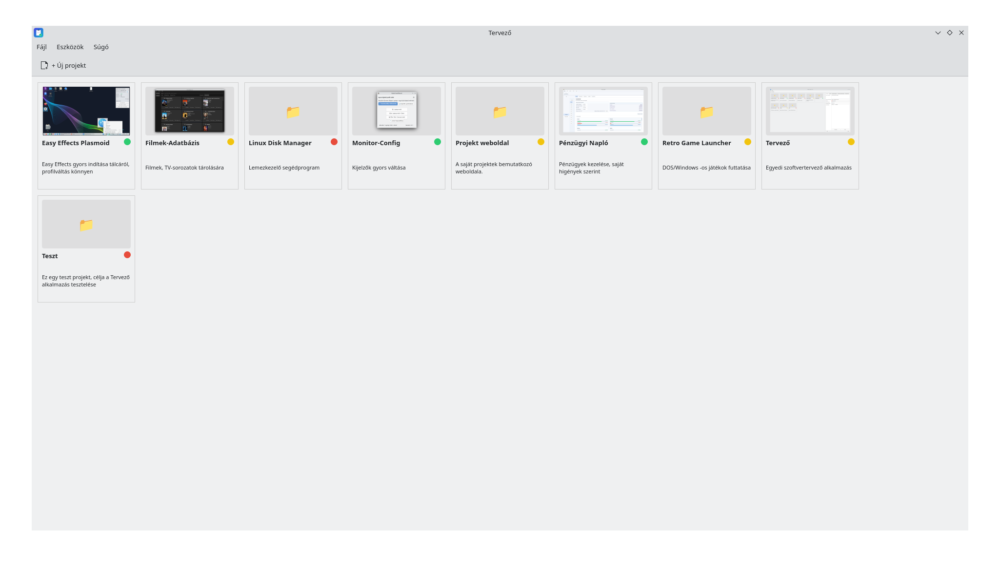

StabilFilmek Adatbázis
Offline film- és sorozatadatbázis borítóképekkel, kártyás és listás nézettel, részletes adatlapokkal és helyi adatkezeléssel.
Saját fejlesztésű asztali alkalmazások Linuxra
Pénzügyi nyilvántartás, filmadatbázis és kijelzőprofil-kezelő eszközök, és még sok más egyszerű telepítéssel, helyi adatkezeléssel és nyílt forráskóddal.

StabilOffline film- és sorozatadatbázis borítóképekkel, kártyás és listás nézettel, részletes adatlapokkal és helyi adatkezeléssel.

StabilEgyszerű, helyi adatkezelésű alkalmazás a napi kiadások és bevételek áttekinthető követésére, Stabil és Előzetes kiadási ággal.
 Stabil
Stabil
Egyszerű kijelzőprofil-kezelő KDE/X11 környezethez, TV, soundbar és külső kijelző profilok gyors váltásához.
 Stabil
Stabil
KDE Plasma panel-widget az EasyEffects gyors eléréséhez: egy kattintás a megnyitáshoz, jobb klikk a hangprofilok listázásához.
 Fejlesztés alatt
Fejlesztés alatt
Retro játékok indítója egységes felülettel, memória- és nyelvválasztási beállításokkal.

StabilEgyszerű, helyi adatkezelésű tervező alkalmazás KDE/Debian környezethez, projektek és feladatok átlátható kezelésére.
Windows telepítő, Portable ZIP, Debian DEB csomagok és forráskód külön letöltési oldalon.
Tovább a letöltésekhez »Windows és Linux alatti képernyőképek a programokról, külön alkalmazásonként rendezve.
Képernyőképek megnyitása »Minden projekt forráskódja nyíltan elérhető GitHub-on, hibajelentéseknek és fejlesztőknek.
GitHub megnyitása »